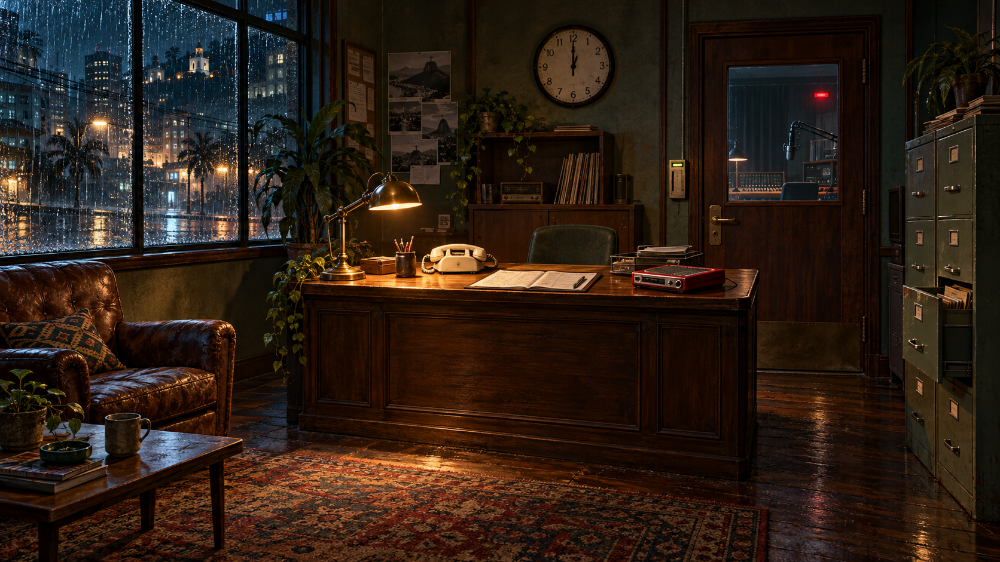

◉ RÁDIO AURORA00:18 · CHUVA FORTE
Carregando ambiente…01 / RECEPÇÃO
Há algo errado neste silêncio.
Examine os objetos e registre os detalhes.
Explorar os objetos por uma lista
COMO INVESTIGAR
Examine os pontos na cena, registre as pistas e compare as versões. Você pode voltar a qualquer ambiente aberto.